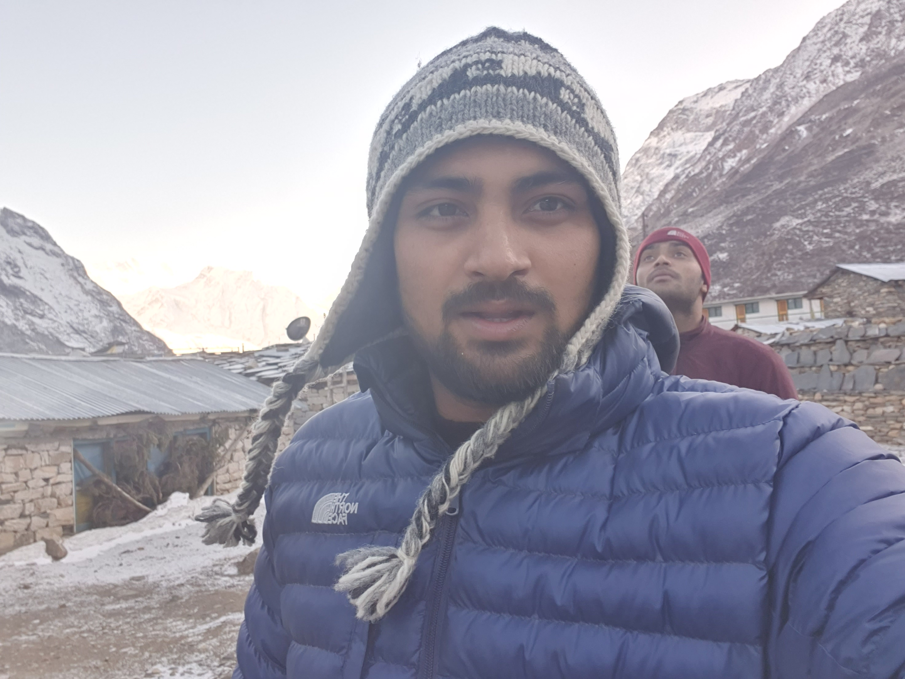

Nirtendra yadav

Summary
Recent graduate and aspiring front-end developer with a solid foundation in HTML, CSS, and JavaScript.
Eager
to apply academic knowledge and hands-on projects to create engaging and responsive web experiences.
A
detail-oriented team player, ready to contribute fresh ideas and collaborate effectively in an entry-level
role.
Education
- Bachelor of Information Technology, KOI (2018-2021)
Work Experience
-
Junior Front-End Developer | Airsyne Capstone project
Sep 2020-2021
- Collaborated with senior developers to implement responsive and visually engaging user interfaces using HTML, CSS, and JavaScript.
-
Assisted in optimizing website performance through code refinement, image compression, and browser compatibility testing.
- Participated in code reviews, identifying and addressing issues to ensure adherence to coding standards and best practices..
-
Contributed to the development of a new client portal, enhancing user experience and increasing user engagement by 25%.
-
Resolved cross-browser compatibility issues, ensuring consistent user experiences across major browsers and devices.
-
Proactively researched emerging front-end technologies and trends, implementing responsive design techniques to enhance mobile usability.
-
AR App Messaging Capstone Project: Work Experience
June 2020-2021
- Designed and developed an Augmented Reality (AR) messaging application as part of a university capstone project.
- Collaborated within a cross-functional team to create a unique communication experience that blended real-world surroundings with virtual messages.
- Utilized Unity3D and ARCore framework to implement AR features, enabling users to place virtual messages in physical locations using their mobile devices.
- Conducted thorough user testing to refine the app's user interface, ensuring intuitive navigation and a seamless AR experience.
- Integrated geolocation services to enable users to discover and interact with messages placed by others within a specified radius.
- Addressed technical challenges, such as optimizing AR rendering performance and managing synchronization of messages across devices.
Skills
- Customer service: ⭐⭐⭐⭐⭐
- Microsoft Office Suite:⭐⭐⭐⭐⭐
- Organizational skills:⭐⭐⭐⭐⭐
Awards and Certifications
- Google It Support
- Meta Front Developer
Other
© Nirtendra yadav. All rights reserved.